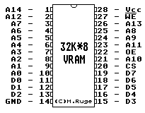

Previous
Next
TOC
Die Pinbelegung des 32K (32.768 Words * 8 Bit Static Ram, Typenbe-
zeichnung
TC
55257BPL-10) Static Ram in der Stacy

Kapitel Die Pinbelegung des 32K*8 Video Ram in der Stacy, Seite 1